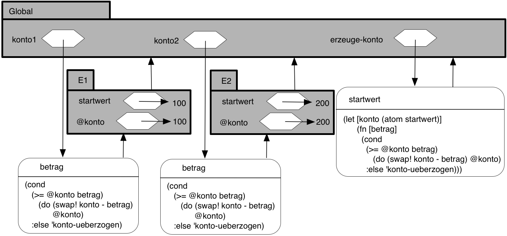
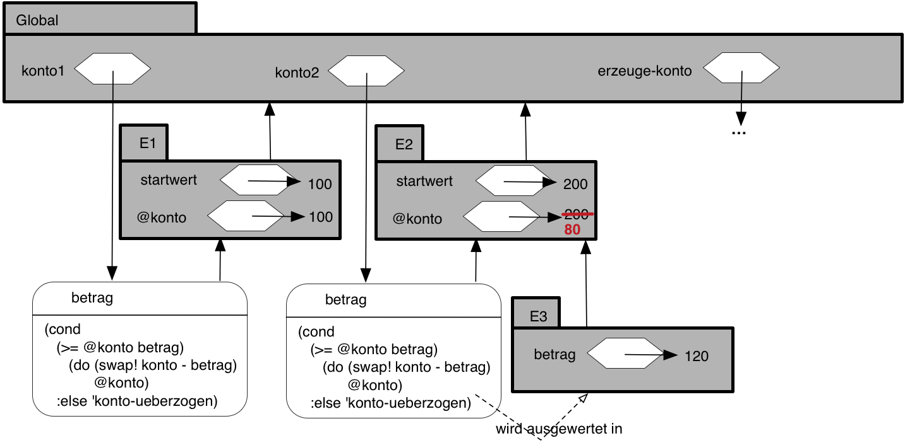
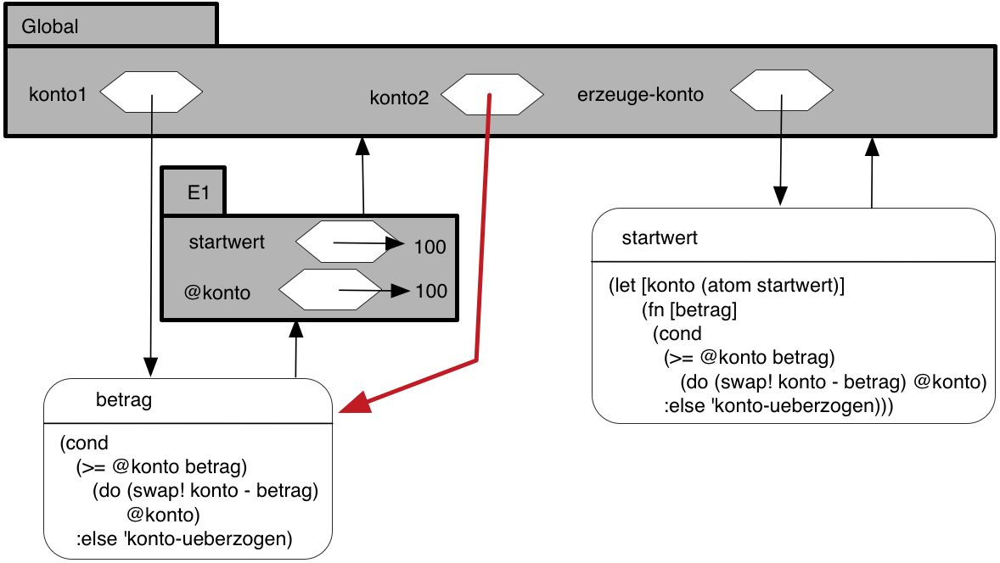
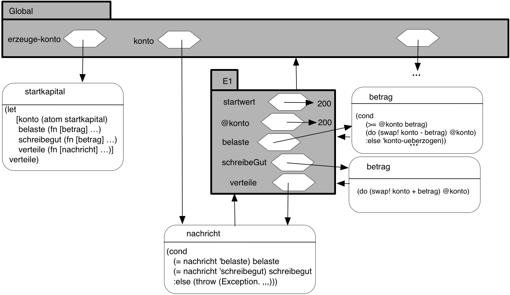
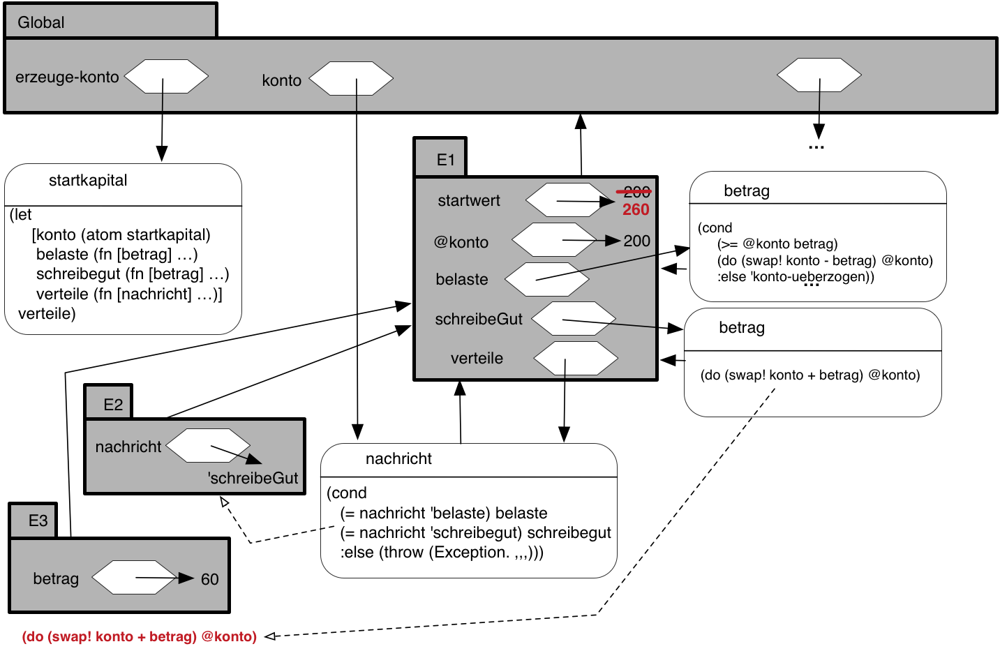
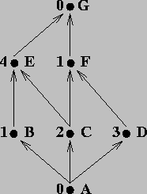

Programmierparadigmen
Aufgaben – Lösungen
1 Teil 1 (5. Semester)
1.1 Aufgabe (SEND-MORE-MONEY)
Lösen Sie das SEND-MORE-MONEY-Problem aus der Vorlesung (Aufgabe: Mehr Geld bitte!) in einer Programmiersprache Ihrer Wahl! Beachten Sie Nebenbedingungen.
1.2 Aufgabe (Beweis Pkw-Motorräder-Problem)
Führen Sie für das Pkw-Motorräder-Problem aus der Vorlesung den dort verlangten Beweis!
1.3 Aufgabe (Entwurfsvorschrift I)
Schreiben Sie gemäß Entwurfsvorschrift I den Vertrag, die Zweckbestimmung für eine Funktion auf, die den Rauminhalt eines Quaders berechnet, für den Länge, Breite und Höhe gegeben ist. Formulieren Sie drei Beispielanwendungen als Tests, die das Verhalten der Funktion veranschaulichen.
1.4 Aufgabe (Entwurfsvorschrift I)
Eine Funktion, die aus der Entfernung und der Geschwindigkeit zweier Züge die Zeit ermittelt, nach der die Züge sich treffen, wenn Sie sich auf einem gemeinsamen Streckenabschnitt von ihren jeweiligen Startpunkten aus aufeinander zu bewegen.
;; berechnet, wie lange es dauert bis die zwei Zuege ;; sich treffen (def zeit-bis-treffen (fn [v-zug1 v-zug2 entfernung] {:pre [(number? v-zug1) (number? v-zug2) (number? entfernung)] :post [(number? %)]} (/ entfernung (+ v-zug1 v-zug2)))) (deftest test-zeit-bis-treffen (is (= 1 (zeit-bis-treffen 50 50 100))) (is (= (/ 4 3) (zeit-bis-treffen 25 50 100))))
Eine Funktion, die aus einem gegebenen Anfangskapital, einem Jahreszinssatz und einer in Monaten gemessenen Laufzeit das Endkapital ermittelt. Die Zinsgutschrift erfolgt einmalig am Ende der Laufzeit. Während der Laufzeit gibt es weder Einzahlungen noch Abhebungen.
;; compute balance with simple interest (def balance (fn [principal rate duration] {:pre [(number? principal) (number? rate) (number? duration)] :post [(number? %)]} (+ principal (* principal (/ (* rate (/ 1 100)) 12) duration)))) (deftest test-balance (is (= 1000 (balance 1000 10 0))) (is (= 1100 (balance 1000 10 12))))
Eine Funktion, die aus der Länge und Breite eines rechteckigen Fußbodens, die Anzahl der benötigten Fliesen berechnet, deren Größe ebenfalls durch Länge und Breite gegeben ist.
Hinweis: Der Funktionsaufruf
(Math/ceil x)liefert die/ kleinste ganze Zahl, die größer als x ist.;; compute number of full tiles necessary for floor (def tiles (fn [f-length f-width t-length t-width] {:pre [(number? f-length) (number? f-width) (number? t-length) (number? t-width)] :post [(number? %)]} (* (Math/ceil (/ f-width t-width)) (Math/ceil (/ f-length t-length))))) (deftest test-fliesen (is (= 100.0 (tiles 10 10 1 1))) (is (= 400.0 (tiles 24 37 (/ 3 2) (/ 3 2)))))
1.5 Aufgabe (Bedingte Funktionen)
Schreiben Sie ein Programm, das aus dem Bruttoeinkommen eines Arbeitnehmers, das sich aus der Anzahl der Arbeitsstunden und seinem Bruttostundenlohn ergibt, sein Nettoeinkommen durch Abzug der Einkommensteuer berechnet. Die Einkommensteuer wird dabei nach einem steuererklärungaufbierdeckelgeeigneten Tarif ermittelt, der folgendermaßen definiert ist:
| Einkommen | Steuersatz [%] |
|---|---|
| \(<= 5000\) | 0 |
| \(> 5000\) und \(\leq 10000\) | 15 |
| \(>10000\) und \(\leq 100000\) | 29 |
| \(>100000\) | 64 |
Der Steuersatz gilt immer nur für die Einkommensanteile in dem jeweiligen Intervall.
Die Funktion nettoeinkommen soll nach folgendem Schema aufrufbar sein:
(nettoeinkommen anzahlArbeitsStunden stundenLohn)
Hier noch ein paar Testvorgaben:
(deftest test-nettoeinkommen (is (= (/ 500085 100) (nettoeinkommen 1 5001))) (is (= (/ 925071 100) (nettoeinkommen 1 10001))) (is (= (/ 7315036 100) (nettoeinkommen 1 100001))))
Hinweise:
- Lesen Sie den Aufgabentext aufmerksam durch. Jeder Satz bedeutet etwas.
- Entwickeln Sie die Funktion gemäß Entwurfsvorschrift II. Benutzen Sie Hilfsfunktionen und machen von Variablendefinitionen Gebrauch.
- Um das Rechnen mit inexakten Zahlen zu vermeiden, geben Sie Steuersätze nicht als Gleitkommazahlen wie 0.29 sondern als rationale Zahlen ein. In diesem Beispiel: (/ 29 100)
(def steuergrenzeI 5000) (def steuergrenzeII 10000) (def steuergrenzeIII 100000) (def steuersatzI 0) (def steuersatzII 15) (def steuersatzIII 29) (def steuersatzIV 64) ;;======================================================= ;; Ermittlung des Einkommensteuersatz ;; ;; Einkommen | Steuersatz (%) ;; <= 5000 | 0 ;; > 5000 und <= 10000 | 15 ;; > 10000 und <= 100000 | 29 ;; > 100000 | 64 ;; ;; Eingabeparameter: Einkommen (in Euro) ;; Resultat: Steuersatz (in Prozent) ;;======================================================= (def steuersatz (fn [einkommen] {:pre [(number? einkommen)] :post [(number? %)]} (cond (and (pos? einkommen) (<= einkommen steuergrenzeI) ) steuersatzI (and (> einkommen steuergrenzeI) (<= einkommen steuergrenzeII)) steuersatzII (and (> einkommen steuergrenzeII) (<= einkommen steuergrenzeIII)) steuersatzIII (> einkommen steuergrenzeIII) steuersatzIV))) (deftest test-steuersatz (is (= steuersatzI (steuersatz 2000))) (is (= steuersatzI (steuersatz steuergrenzeI))) (is (= steuersatzII (steuersatz 7500))) (is (= steuersatzII (steuersatz steuergrenzeII))) (is (= steuersatzIII (steuersatz 50000))) (is (= steuersatzIII (steuersatz steuergrenzeIII))) (is (= steuersatzIV (steuersatz 1000000)))) ;;======================================================= ;; Ermittlung der Einkommensteuer ;; Eingabeparameter: Einkommen (in Euro) ;; Resultat: Einkommensteuerbetrag (in Euro) ;;======================================================= (def einkommensteuer (fn [einkommen] {:pre [(number? einkommen)] :post [(number? %)]} (cond (= (steuersatz einkommen) steuersatzI) (/ steuersatzI 100) (= (steuersatz einkommen) steuersatzII) (+ (einkommensteuer steuergrenzeI) (* (- einkommen steuergrenzeI) (/ steuersatzII 100))) (= (steuersatz einkommen) steuersatzIII) (+ (einkommensteuer steuergrenzeII) (* (- einkommen steuergrenzeII) (/ steuersatzIII 100))) (= (steuersatz einkommen) steuersatzIV) (+ (einkommensteuer steuergrenzeIII) (* (- einkommen steuergrenzeIII) (/ steuersatzIV 100)))))) (deftest test-einkommensteuer (is (= 750 (einkommensteuer 10000)))) ;;======================================================= ;; Berechnung des Bruttoeinkommens eines Arbeitnehmers ;; Eingabeparameter: Anzahl Arbeitsstunden, ;; Bruttostundenlohn (in Euro) ;;======================================================= (def bruttoeinkommen (fn [arbeitsstunden stundenlohn] {:pre [(number? arbeitsstunden) (number? stundenlohn)] :post [(number? %)]} (* arbeitsstunden stundenlohn))) (deftest test-bruttoeinkommen (is (= 50 (bruttoeinkommen 10 5)))) ;;======================================================= ;; Berechnung des Nettolohns eines Arbeitnehmers aus ;; Anzahl Arbeitsstunden und Bruttostundenlohn (in Euro) ;; Resultat: Nettolohn (in Euro) ;;======================================================= (def nettoeinkommen (fn [arbeitsstunden stundenlohn] {:pre [(number? arbeitsstunden) (number? stundenlohn)] :post [(number? %)]} (- (bruttoeinkommen arbeitsstunden stundenlohn) (einkommensteuer (bruttoeinkommen arbeitsstunden stundenlohn))))) (deftest test-nettoeinkommen (is (= 500085/100 (nettoeinkommen 1 5001))) (is (= 925071/100 (nettoeinkommen 1 10001))) (is (= 7315036/100 (nettoeinkommen 1 100001))))
1.6 Aufgabe (Datenstrukturen)
Gehen Sie für die Lösung der Aufgabe nach Entwurfsvorschrift III vor!
Definieren Sie eine Datenstruktur für „Zeitpunkte seit Mitternacht”, die aus den Komponenten
stunden,minutenundsekundenbesteht.Entwickeln Sie eine Funktion
zeit->sekunden, die eine Zeitpunkt-seit-Mittnacht-Struktur verarbeitet und die seit Mitternacht vergangenen Sekunden berechnet.
(use 'clojure.test) ;; die Uhrzeit besteht aus ;; - einer Zahl für die Stunden ;; - einer Zahl für die Minuten ;; - einer Zahl für die Sekunden ;; ->uhrzeit: (number number number -> uhrzeit) ;; :uhrzeit-h : (uhrzeit -> number) ;; :uhrzeit-m : (uhrzeit -> number) ;; :uhrzeit-s : (uhrzeit -> number)) (defrecord uhrzeit [uhrzeit-h uhrzeit-m uhrzeit-s]) ;; berechnet die Sekunden seit Mitternacht (def zeit-seit-mitternacht (fn [u] {:pre [(instance? uhrzeit u)] :post [(number? %)]} (+ (* 3600 (:uhrzeit-h u)) (* 60 (:uhrzeit-m u)) (:uhrzeit-s u)))) (deftest uhrzeit-test (is (= (zeit-seit-mitternacht (->uhrzeit 1 2 3)) 3723))) (run-tests)
Definieren Sie geeignete Datenstrukturen für Kreise, die durch
- die Koordinaten des Mittelpunkts und
- den Radius und
gegeben sind.
Schreiben Sie eine Funktion, die prüft, ob ein Punkt innerhalb eines Kreises liegt.
1.7 Aufgabe (gemischte Daten)
Ein Mitarbeiter ist entweder
- ein Festangestellter oder
- ein Werkstudent
Ein Festangestellter wird definiert durch
- seinen Namen,
- sein Grundgehalt,
- die im letzten Monat geleisteten Arbeitsstunden.
Ein Werkstudent wird definiert durch
- seinen Namen,
- seinen Stundenlohn,
- die im letzten Monat geleisteten Arbeitsstunden.
Definieren Sie unter Berücksichtigung von Entwurfsvorschrift IV
- geeignete Datenstrukturen für Mitarbeiter,
- eine Funktionsschablone für Funktionen, die Mitarbeiter verarbeiten.
Entwickeln auf der Grundlage dieser Schablone eine Funktion, die den Bruttomonatslohn eines Mitarbeiters berechnet. Bei Festangestellten berechnet sich der Monatslohn aus dem Grundgehalt zuzüglich Überstundenentgelt. Überstunden sind die über die monatliche Sollarbeitszeit (die als globale Konstante definiert wird) hinausgehenden Arbeitsstunden. Der Stundenlohn pro Überstunde berechnet sich aus dem Grundgehalt und der monatlichen Sollarbeitszeit plus \(25\%\). Minderstunden bleiben unberücksichtigt.
(use 'clojure.test) ;; Konstanten - monatliche Sollarbeitszeit in Stunden (def sollstunden 160) ;; Ein Festangestellter wird definiert durch ;; - seinen Namen ;; - sein Grundgehalt, ;; - die im letzten Monat geleisteten Arbeitsstunden. ;; ->angestellter : string number number -> angestellter ;; :angestellter-name : angestellter -> string ;; :angestellter-gehalt : angestellter -> number ;; :angestellter-stunden : angestellter -> number (defrecord angestellter [angestellter-name angestellter-gehalt angestellter-stunden]) ;; Ein Werkstudent wird definiert durch ;; - seinen Namen, ;; - seinen Stundenlohn, ;; - die im letzten Monat geleisteten Arbeitsstunden. ;; ->student : string number number -> student ;; :student-name : student -> string ;; :student-lohn : student -> number ;; :student-stunden : student -> number (defrecord student [student-name student-lohn student-stunden]) ;; berechnet den Ueberstundenzuschlag eines Angestellten: ;; Gehalt pro Ueberstunde = (Gehalt / sollstunden) * 1.25 ;; ueberstunden = ist stunden - soll stunden ;; zuschlag = ueberstunden * gehalt pro ueberstunde (def ueberstunden-zuschlag (fn [fa] {:pre [(instance? angestellter fa)] :post [(number? %)]} (cond (> (:angestellter-stunden fa) sollstunden) (* (/ (:angestellter-gehalt fa) sollstunden) 5/4 (- (:angestellter-stunden fa) sollstunden)) :else 0))) (deftest test-ueberstundenZuschlag (is (= (ueberstunden-zuschlag (->angestellter "Karl" 2000 170)) (+ 156 1/4))) (is (= (ueberstunden-zuschlag (->angestellter "Franz" 2000 140)) 0))) ;; berechnet Bruttomonatslohn eines Angestellten aus: ;; Grundgehalt + Überstundenentgelt (def angestellter-monatslohn (fn [a] {:pre [(instance? angestellter a)] :post [(number? %)]} (+ (:angestellter-gehalt a) (ueberstunden-zuschlag a)))) (deftest test-angestellter-monatslohn (is (= (angestellter-monatslohn (->angestellter "Meier" 1000 160)) 1000)) (is (= (angestellter-monatslohn (->angestellter "Mueller" 2000 170)) (+ 2156 1/4)))) ;; berechnet Bruttomonatslohn eines Studenten aus: ;; Stundenlohn x Arbeitsstunden (def student-monatslohn (fn [st] {:pre [(instance? student st)] :post [(number? %)]} (* (:student-stunden st) (:student-lohn st)))) (deftest test-student-monatslohn (is (= (student-monatslohn (->student "Karl" 8 150)) 1200))) ;; Ein Mitarbeiter ist entweder ;; - ein Festangesteller ;; - ein Werksstudent (def mitarbeiter? #(or (instance? angestellter %) (instance? student %))) ;; berechnet Bruttomonatslohn eines Mitarbeiters (def monatslohn (fn [m] {:pre [(mitarbeiter? m)] :post [(number? %)]} (cond (instance? angestellter m) (angestellter-monatslohn m) (instance? student m) (student-monatslohn m)))) (deftest test-monatslohn (is (= (monatslohn (->angestellter "Mueller" 2000 170)) (+ 2156 1/4))) (is (= (monatslohn (->angestellter "Hans" 2000 140)) 2000)) (is (= (monatslohn (->student "Franz" 10 150)) 1500))) (run-tests)
1.8 Aufgabe (elementare Ausdrücke über Listen)
Werten Sie die folgenden Funktionsaufrufe aus:
| Nr. | Ausdruck | Lösung |
|---|---|---|
| a) | (first '((A) B C D)) |
|
| b) | (rest '((A)(B C D))) |
|
| c) | (cons '(A B) '(A B)) |
|
| d) | (cons 'A '()) |
|
| e) | (first '(((A)))) |
|
| f) | (rest '(((A)))) |
|
| g) | (cons '((A)) empty) |
|
| h) | (= 'X1 'X2) |
|
| i) | (= '(X1) 'X2) |
|
| j) | (= '(X1) '(X2)) |
|
| k) | (list? 'X1) |
|
| l) | (list? '(X1)) |
|
| m) | (list? '()) |
|
| n) | (list? '(()) |
1.9 Aufgabe (listenverarbeitende Funktionen)
- Die Funktion
sumliefere, angewendet auf eine Liste von Zahlenx, die Summe der Elemente. - Die Funktion
prodliefere, angewendet auf eine Liste von Zahlenx, das Produkt der Elemente. - Die Funktion
maximumliefere, angewendet auf eine Liste von Zahlenx, das Maximum der Elemente. - Die Funktion
enthaelt?beantworte, angewendet auf ein Symbol und eine Liste von Symbolen, die Frage, ob das Symbol in der Liste enthalten ist oder nicht
;; berechnet die Summe der Elemente einer Zahlenliste (def sum (fn [lon] {:pre [(every? number? lon)] :post [(number? %)]} (cond (empty? lon) 0 :else (+ (first lon) (sum (rest lon)))))) (deftest test-sum (is (= 0 (sum ()))) (is (= 12 (sum '(7 3 2))))) ;; berechnet das Produkt der Elemente einer Zahlenliste (def prod (fn [lon] {:pre [(every? number? lon)] :post [(number? %)]} (cond (empty? lon) 1 :else (* (first lon) (prod (rest lon)))))) (deftest test-prod (is (= 1 (prod ()) )) (is (= 60 (prod '(3 4 5)) ))) ;; Definition einer Datenstruktur fuer nicht-leere ;; Zahlenlisten (nllvz): ;; Eine nllvz ist entweder ;; 1. (cons z ()) mit z ist ein Zahl; oder ;; 2. (cons z nl) mit z ist ein Zahl und nl eine nllvz ;; berechnet das Maximum der Elemente einer Zahlenliste (def maximum (fn [lon] {:pre [(every? number? lon)] :post [(number? %)]} (cond (empty? (rest lon)) (first lon) :else (max (first lon) (maximum (rest lon)))))) (deftest test-max (is (= -1 (maximum '(-1 -2)) )) (is (= 5 (maximum '(3 5 1)) ))) ;; prueft, ob ein Symbol in einer Liste von Symbolen vorkommt (def enthaelt? (fn [liste symbol] {:pre [(every? symbol? liste)] :post [(or (true? %) (false? %))]} (cond (empty? liste) false :else (cond (= (first liste) symbol) true :else (enthaelt? (rest liste) symbol))))) (deftest test-enthaelt (is (= false (enthaelt? () 's) )) (is (= false (enthaelt? '(x y z) 's) )) (is (= true (enthaelt? '(s y z) 's) )) (is (= true (enthaelt? '(x y s z) 's) )))
1.10 Aufgabe (listenverarbeitende Funktionen)
Schreiben Sie eine Funktion (declist x), die aus einer Liste x von
Zahlen eine neue Liste berechnet, deren Elemente um 1 kleiner sind, als
die der ursprünglichen Liste:
| x | (declist x) |
|---|---|
| (2 5 7) | (1 4 6) |
| () | () |
;; nimmt eine Liste von Zahlen und erzeugt eine neue, ;; deren Elemente um 1 kleiner sind, als die der ;; urspruenglichen Liste (def declist (fn [lon] {:pre [(every? number? lon)] :post [(every? number? %)]} (cond (empty? lon) () :else (cons (- (first lon) 1) (declist (rest lon)))))) (deftest test-declist (is (= () (declist ()) )) (is (= '(1 -6 16) (declist '(2 -5 17)) )))
1.11 Aufgabe (listenverarbeitende Funktionen)
Definieren Sie eine Funktion
(flatten x), die als Argument eine Listexmit beliebig tief geschachtelten Unterlisten hat und als Ergebnis eine Liste von Atomen liefern soll mit der Eigenschaft, dass alle Atome, die in x vorkommen auch in(flatten x)in derselben Reihenfolge vorkommen:x (flatten x) (A (B C) D) (A B C D) (((A B) C)(D E)) (A B C D E) ((((A)))) (A) Hinweis: Definieren Sie zuerst in der bekannten Art und Weise eine rekursive Datenstruktur für geschachtelte Listen. Leiten Sie daraus eine passende Funktionsschablone ab.
;; Definition einer beliebig tief geschachtelten Liste ;; (btgl) von Atomen: ;; Eine btgl ist ;; - () ;; - (cons a l) mit a ist ein Atom, l ist eine btgl ;; - (cons l1 l2) mit l1, l2 sind btgl ;; Funktionsschablone: ;(def f ; (fn [l] ; (cond ; (empty? l) ... ; (not (seq? (first l))) ; ... (first l) ... (f (rest l)) ... ; :else ... (f (first l)) ... (f (rest l)) ...))) ;; nimmt eine Liste von Zahlen und erzeugt eine neue, ;; deren Elemente um 1 kleiner sind, als die der ;; urspruenglichen Liste (def flatten (fn [lst] {:pre [(seq? lst)] :post [(not-any? seq? %)]} c (cond (empty? lst) () (not (seq? (first lst))) (cons (first lst) (flatten (rest lst))) :else (concat (flatten (first lst)) (flatten (rest lst)))))) (deftest test-flatten (is (= (flatten ()) ())) (is (= (flatten '(a (b (c (d))))) '(a b c d))) (is (= (flatten '((((a) b) c) d)) '(a b c d))))
Schreiben Sie eine Funktion
(frequencies x), die aus einer Listexvon Atomen eine Liste von zwei-elementigen Listen erzeugt: Dabei ist das erste Element das Atom ausx, das zweite Element die Häufigkeit des Auftretens inx. Die Reihenfolge der Strukturen in der Ergebnisliste ist belanglos.x (frequencies x) (A B A B A C A) ((A 4) (B 2) (C 1)) () () ;; Datenstrukturdefinitionen: ;; Eine Atom-Number-Pair (anp) ist ein ;; - (cons a (cons n () )) mit a ist Atom und n ist Number ;; ;; Eine Liste von Atomen (loa) ist ;; - () oder ;; - (cons a l) mit a ist Atom und l ist loa ;; ;; Eine Liste von Atom-Number-Pairs (loanp) ist ;; - () oder ;; - (cons a l) mit a ist anp und l ist loanp (def atom-number-pair? (fn [ap] (and (not (seq? (first ap))) (number? (first (rest ap)))))) (def atom? (fn [v] (not (seq? v)))) ;; erhoeht die number im ersten atom-mumber-pair um 1 (def incr-first-number (fn [aloanp] {:pre [(every? atom-number-pair? aloanp)] :post [(every? atom-number-pair? %)]} (let [firstatom (first (first aloanp)) firstnumber (first (rest (first aloanp))) rest-anps (rest aloanp)] (cons (list firstatom (+ firstnumber 1)) rest-anps)))) (deftest test-incr-first-number (is (= (incr-first-number '((a 5) (b 3) (c 4))) '((a 6) (b 3) (c 4))))) ;; prueft, ob das Atom in der Liste vorkommt: ;; - falls ja ist die number im entsprechenden pair zu ;; inkrementieren ;; - falls nein ist der Liste ein neues pair "(atom 1)" ;; hinzuzufuegen (def addAtom (fn [atom aloanp] {:pre [(every? atom-number-pair? aloanp)] :post [(every? atom-number-pair? %)]} (cond (empty? aloanp) (cons (list atom 1) () ) (= atom (first (first aloanp))) (incr-first-number aloanp) :else (cons (first aloanp) (addAtom atom (rest aloanp)))))) (deftest test-addAtom (is (= (addAtom 'a () ) '((a 1)))) (is (= (addAtom 'a '((a 1) (b 1))) '((a 2) (b 1)))) (is (= (addAtom 'a '((b 1))) '((b 1) (a 1))))) ;; Zweckbestimmung s. Aufgabenblatt (def frequencies (fn [aloa] {:pre [(every? atom? aloa)] :post [(every? atom-number-pair? %)]} (cond (empty? aloa) () :else (addAtom (first aloa) (frequencies (rest aloa)))))) (deftest test-frequencies (is (= (frequencies ()) ())) (is (= (frequencies '(a)) '((a 1)))) (is (= (frequencies '(A B A B A C A)) '((A 4) (C 1) (B 2)))))
1.12 Aufgabe (Datentyp Nat)
- Schreiben Sie eine Funktion
repeat, die eine natürliche Zahl \(n\in Nat\) (Definition des Datentyps \(Nat\) s. Vorlesung) und ein Symbol \(s\) als Argumente nimmt und eine Liste mit dem \(n\) -maligen Auftreten von \(s\) erzeugt. Schreiben Sie eine Funktion
Int->Nat, die eine beliebige positive ganze Zahl in eine äquivalentes Element des Datentyps \(Nat\) verwandelt, z.B.:(Int->Nat 3) => (succ (succ (succ zero)))Schreiben Sie eine Funktion
Nat->Int, die eine natürliche Zahl \(n\in Nat\) in eine normale Clojure-Number verwandelt, z.B.:(Nat->Int (succ (succ (succ zero)))) => 3Schreiben Sie eine Funktion
;; times: Nat Nat -> Nat
, die zwei natürliche Zahlen multipliziert.
(ns nat) (use 'clojure.test) (def zero 'zero) ;; succ: Nat -> Nat (def succ (fn [n] (list 'succ n))) (deftest test-succ (is (= (succ zero) (succ zero))) (is (= (succ (succ zero)) (succ (succ zero))))) ;; prueft, ob ihr Argument zero ist. ;; =zero?: Nat -> boolean (def =zero? (fn [n] (= n zero))) (deftest test-=zero? (is (= (=zero? zero) true)) (is (= (=zero? (succ zero)) false))) ;; liefert den Term des Vorgaengers ihres Arguments ;; pred: Nat -> Nat (def pred (fn [n] (cond (=zero? n) (throw (Exception. "zero hat keinen Vorgaenger")) :else (first (rest n))))) (deftest test-pred (is (= (pred (succ zero)) zero)) (is (= (pred (succ (succ zero))) (succ zero))) (is (thrown? Exception (pred zero)))) ;; berechnet die Summe ihrer Argumente ;; plus: Nat Nat -> Nat (def plus (fn [n m] (cond (=zero? n) m :else (succ (plus (pred n) m))))) (deftest test-plus (is (= (plus zero (succ zero)) (succ zero))) (is (= (plus (succ zero) (succ zero)) (succ (succ zero)))) (is (= (plus (succ zero) (plus (succ zero) (succ zero))) (succ (succ (succ zero)))))) ;; zaehlt die Anzahl der Elemente ihres Arguments ;; countElements: (list-of any) -> Nat (def countElements (fn [lst] (cond (empty? lst) zero :else (succ (countElements (rest lst)))))) (deftest test-countElements (is (= (countElements () ) zero)) (is (= (countElements '(19 27 36)) (succ (succ (succ zero)))))) ;; repeat erzeugt eine Liste mit dem n-maligen Auftreten von s ;; repeat: Nat symbol -> (list-of symbol) (def repeat (fn [n s] (cond (=zero? n) () :else (cons s (repeat (pred n) s))))) (deftest test-repeat (is (= (repeat (succ (succ zero)) 'karl) (list 'karl 'karl))) (is (= (repeat (succ zero) 'rosa) (list 'rosa))) (is (= (repeat zero 'clara) ()))) ;; int->nat verwandelt eine beliebige positive ganze Zahl ;; in eine aequivalentes Element des Datentyps Nat ;; int->nat: Number -> Nat (def int->nat (fn [int] (cond (= int 0) zero :else (succ (int->nat (- int 1)))))) (deftest test-int->nat (is (= (int->nat 0) zero)) (is (= (int->nat 3) (succ (succ (succ zero)))))) ;; nat->int, wandelt eine natuerliche Zahl aus Nat in eine ;; normale Clojure-Number ;; nat->int: Nat -> Number (def nat->int (fn [n] (cond (=zero? n) 0 :else (+ 1 (nat->int (pred n)))))) (deftest test-nat->int (is (= (nat->int zero) 0)) (is (= (nat->int (succ (succ (succ zero)))) 3))) ;; Multiplikation von zwei Nat-Zahlen aus Nat ;; times: Nat Nat -> Nat ;; Axiome ;; n,m aus Nat ;; 1. times(0,m) = 0 ;; 2. times(n,m) = plus(times(pred(n),m),m) (def times (fn [f1 f2] (cond (=zero? f1) zero :else (plus (times (pred f1) f2) f2)))) (deftest test-times (is (= (times zero zero) zero)) (is (= (times zero (succ zero)) zero)) (is (= (times (succ (succ zero)) (succ (succ zero))) (succ (succ (succ (succ zero))))))) (run-tests)
1.13 Aufgabe (Symbolische Differentiation)
Es sollen Ausdrücke abgeleitet werden, die nur aus Konstanten, Variablen und den Operationen \(+\) und \(\cdot\) bestehen.
Sei \(D_x\) die partielle Ableitung einer Funktion \(f\) nach \(x\), dann gelten folgende Regeln:
- \(D_x(x) = 1\)
- \(D_x(y) = 0\), \(y\neq x\), sei \(y\) eine Konstante oder Variable
- \(D_x(e_1 + e_2) = D_x(e_1)+D_x(e_2)\) (Summenregel)
- \(D_x(e_1\cdot e_2) = e_1\cdot D_x(e_2) + e_2\cdot D_x(e_1)\) (Produktregel)
Repräsentation der Formeln:
- Konstante: numerisches Atom
- Variable: symbolisches Atom
- \(e_1 + e_2\): (ADD \(e_1\) \(e_2\))
- \(e_1 \cdot e_2\): (MUL \(e_1\) \(e_2\))
Anwendungsbeispiele:
Der Ausdruck (diff '(add x x) x) liefere '(add 1 1)
oder (diff '(mul x x) 'x) liefere '(add (mul x 1) (mul 1 x)).
Hinweise:
- Definieren Sie zur Erzeugung von Formeln geeignete Hilfsfunktionen!
- Wenn eine Formel nicht korrekt aufgebaut ist, kann das Symbol
'
ERRORzurückgeliefert werden, das möglicherweise in einem korrekten Teil der Formel eingeschachtelt erscheint. - Machen Sie ausgiebig von lokalen Definitionen Gebrauch.
(ns diff-mit-vereinfachung2) (use 'clojure.test) ;;;;;;;;;;;;;;;;;;;;;;;;;;;;;;;;;;;;;;;;;;;;;;;;;;;;;;;;;;;;;;;; ;; Aufgabe 16 (mit Vereinfachung der abgeleiteten Ausdruecke);; ;;;;;;;;;;;;;;;;;;;;;;;;;;;;;;;;;;;;;;;;;;;;;;;;;;;;;;;;;;;;;;;; ; ;; Datenstrukturdefinition fuer Formeln: ;; - numerisches Atom oder ;; - symbolisches Atom oder ;; - (add e1 e2) mit e1, e2 sind Formeln, oder ;; - (mul e1 e2) mit e1, e2 sind Formeln ;Hilfsdefinitionen (def addop 'add) (def mulop 'mul) ;ein paar Variablen (def x 'x) (def y 'y) (def z 'z) ;; add: exp exp -> exp ;; nimmt primitive Vereinfachungen einer Summenformel vor; ;; eine Summenformel vereinfacht sich quasi selbst (def add (fn [x y] (cond (= x 0) y (= y 0) x (and (number? x) (number? y)) (+ x y) :else (list 'add x y)))) ;; mul: exp exp -> exp ;; nimmt primitive Vereinfachungen einer Produktformel vor; ;; eine Produktformel vereinfacht sich quasi selbst (def mul (fn [x y] (cond (or (= x 0) (= y 0)) 0 (= y 1) x (= x 1) y (and (number? x) (number? y)) (* x y) :else (list 'mul x y)))) (def complex-formula? (fn [liste] (and (= (count liste) 3) (or (= (first liste) addop) (= (first liste) mulop))))) (def formula? (fn [form] (or (number? form) (symbol? form) (complex-formula? form)))) (def diff (fn [exp var] {:pre [(formula? exp) (symbol? var)] :post [formula? %]} (let [operand-1 (fn [e] (first (rest exp))) operand-2 (fn [e] (first (rest (rest exp)))) variable? (fn [x] (symbol? x)) same-variable? (fn [v1 v2] (and (variable? v1) (variable? v2) (= v1 v2))) sum? (fn [formula] ;; prueft, ob formula eine Summe ist (and (complex-formula? formula) (= (first formula) addop))) prod? (fn [formula] ;; prueft, ob formula ein Produkt ist (and (complex-formula? formula) (= (first formula) mulop)))] (cond (number? exp) 0 (variable? exp) (if (same-variable? exp var) 1 0) (sum? exp) (add (diff (operand-1 exp) var) (diff (operand-2 exp) var)) (prod? exp) (add (mul (operand-1 exp) (diff (operand-2 exp) var)) (mul (diff (operand-1 exp) var) (operand-2 exp))) :else (throw (Exception. "unknown expression type")))))) ;; Tests (deftest test-diff (is (= (diff 1 x) 0)) (is (= (diff x x) 1)) (is (= (diff y x) 0)) (is (= (diff (add x x) x) 2)) (is (= (diff (mul x x) 'x) (add x x)))) (run-tests)
1.14 Aufgabe (Auswertung von Ausdrücken)
Werten Sie die folgenden Ausdrücke Schritt für Schritt aus:
(+ (* ( / 12 8) 2/3 ) (- 20 (sqrt 4)))(+ (* (/ 12 8) 2/3) (- 20 (sqrt 4))) = (+ (* 3/2 2/3) (- 20 (sqrt 4))) = (+ 1 (- 20 (sqrt 4))) = (+ 1 (- 20 2)) = (+ 1 18) = 19(cond (= 0 0 ) false (> 0 1 ) (= 'a 'a) :else ( = (/ 1 0 ) 9))(cond (= 0 0) false (> 0 1) (= 'a 'a) :else (= (/ 1 0) 9)) = (cond true false (> 0 1) (? 'a 'a) :else (= (/ 1 0) 9)) = false(cond (= 2 0) false (> 2 1) (= 'a 'a ) :else (= ( / 1 2) 9))(cond (= 2 0) false (> 2 1) (= 'a 'a) :else (= (/ 1 2) 9)) = (cond false false (> 2 1) (= 'a 'a) :else (= (/ 1 2) 9)) = (cond (> 2 1) (= 'a 'a) :else (= (/ 1 2) 9)]) = (cond true (= 'a 'a) :else (= (/ 1 2) 9)) = (= 'a 'a) = true
1.15 Aufgabe (Auswertung von Ausdrücken)
Gegeben sei die folgende Funktionsdefinition:
;; f: number number -> number
(def f
(fn [x y]
(+ (* 3 x) (* y y))))
Werten Sie die folgenden Ausdrücke Schritt für Schritt aus:
(+ (f 1 2) (f 2 1))(+ (f 1 2) (f 2 1)) = (+ ((fn [x y) (+ (* 3 x) (* y y))) 1 2) ((fn [x y) (+ (* 3 x) (* y y))) 2 1)) = (+ (+ (* 3 1) (* 2 2)) (+ (* 3 2) (* 1 1))) = (+ (+ 3 4) (+ 6 1)) = (+ 7 7) = 14(f 1 (* 2 3))(f 1 (* 2 3)) = ((fn [x y) (+ (* 3 x) (* y y))) 1 (* 2 3)) = ((fn [x y) (+ (* 3 x) (* y y))) 1 6) = (+ (* 3 1) (* 6 6)) = (+ 3 36) = 39(f (f 1 (* 2 3)) 19)(f (f 1 (* 2 3)) 19) = ((fn [x y) (+ (* 3 x) (* y y))) (f 1 (* 2 3)) 19) = ((fn [x y) (+ (* 3 x) (* y y))) ((fn [x y) (+ (* 3 x) (* y y))) 1 6) 19) = ((fn [x y) (+ (* 3 x) (* y y))) (+ (* 3 1) (* 6 6)) 19) = ((fn [x y) (+ (* 3 x) (* y y))) (+ 3 36) 19) = ((fn [x y) (+ (* 3 x) (* y y))) 39 19) = (+ (* 3 39) (* 19 19)) = (+ 117 361) = 478
1.16 Aufgabe (rekursive Induktion)
Gegeben sei folgende Clojure-Funktion
(def f
(fn [n]
(cond
(= n 0) 0
:else (+ (f (- n 1))
(/ 1 (* n (+ n 1)))))))
Zeigen Sie, dass der Aufruf (f n) die Zahl \[f(n)=\frac{n}{n+1}\]
berechnet.
- Verankerung:
Der Aufruf
(f 0)besitzt Rekursionstiefe 0 und liefert nach Ersetzungsmodell:(f 0) = (cond (= 0 0) 0 :else (+ (f (- 0 1)) (/ 1 (* 0 (+ 0 1))))) = (cond true 0 :else (+ (f (- 0 1)) (/ 1 (* 0 (+ 0 1))))) = 0 \(= \frac{0}{0+1}\)- Induktionsannahme:
- Die Behauptung gilt für Rekursionstiefe \(k = n\), d.h. es gilt \[(f\ n) = \frac{n}{n+1}\].
- Induktionsschluss
Zu beweisen für \(n\in \textsl{\textbf{N}}\): Die Behauptung gilt auch für einen Aufruf mit Rekursionstiefe \(n+1\) \[(f\ m) = \frac{m}{m+1} = \frac{n+1}{n+2} \textrm{ mit } m = n + 1\]
(f m) = (cond (= m 0) 0 :else (+ (f (- m 1)) (/ 1 (* m (+ m 1)))))Da \(m\) eine Zahl größer als \(0\) ist, liefert die Auswertung weiter:
= (+ (f (- m 1)) (/ 1 (* m (+ m 1))))Zwischenschritte:
$(- m 1) \(= m-1 = (n + 1) -1 = n\)
Sei \(z\) =
(/ 1 (* m (+ m 1)))\[= \frac{1}{m\cdot (m+1)} = \frac{1}{(n+1)\cdot (n+2)}\] Die Auswertung von(f m)liefert also(+ (f n) z).Nach Induktionsannahme liefert
(f n)\(\frac{n}{n+1}\), also folgt:\[\begin{aligned} \frac{n}{n+1} + \frac{1}{(n+1)\cdot (n+2)} & = & \frac{n\cdot (n+2)+1}{(n+1)\cdot (n+2)} \\ & = & \frac{n^{2} + 2n + 1}{(n+1)\cdot (n+2)} \\ & = & \frac{(n+1)^{2}}{(n+1)\cdot (n+2)} \\ & = & \frac{n+1}{n+2}\end{aligned}\]
1.17 Aufgabe (Verarbeitung von zwei Listen)
Die in den folgenden Aufgaben zu entwickelnden Funktionen haben alle 2 Listen-Parameter. Lösen Sie diese Aufgaben unter Anwendung von Entwurfsvorschrift V. Überlegen Sie dabei, ob für die Erstellung der Funktionsschablone der Zugriff auf das erste Element und die Restliste hinsichtlich des ersten, des zweiten oder beider Parameter vorgenommen werden muss.
- Schreiben Sie ein Funktion
concatenate, die zwei Listen von Symbolen aneinander hängt. Beispiel: = (concatenate ’(a b c) ’(d e f))> ’(a b c d e f) - Schreiben Sie eine Funktion
mult-2-num-lists, die zwei gleich lange Listen mit Zahlen zu einer Liste verarbeitet, die die Produkte der korrespondierenden Elemente der Argumentlisten enthält. Beispiel:(mult-2-num-lists ’(2 3 4) ’(7 8 9)) => ’(14 24 36) - Entwickeln Sie eine Funktion
merge, die 2 Listen von Zahlen verarbeitet, die aufsteigend sortiert sind. Sie liefert eine sortierte Liste von Zahlen, die alle Zahlen aus den beiden Argumentlisten enthält. Wenn Zahlen in den Argumentliste mehrfach vorkommen, sollen Sie auch in der Ergebnisliste entsprechend oft auftauchen. Beispiel: =(merge ’(2 5 7) ’(1 3 5 9)) => ’(1 2 3 5 5 7 9) =
(ns zweiListen) (use 'clojure.test) ;; haengt zwei Listen von Symbolen aneinander (def concat (fn [lvs1 lvs2] \{:pre [(every? symbol? lvs1) (every? symbol? lvs2)] :post [(every? symbol? %)]\} (cond (empty? lvs1) lvs2 :else (cons (first lvs1) (concat (rest lvs1) lvs2))))) (deftest test-concat (is (= (concat '() '()) '())) (is (= (concat '(a b c) '()) '(a b c))) (is (= (concat '() '(a b c)) '(a b c))) (is (= (concat '(a b c) '(x y z)) '(a b c x y z)))) ;; multipliziert korrespondierte Elemente von 2 Zahlenlisten (def mult-2-num-lists (fn [lvz1 lvz2] \{:pre [(every? number? lvz1) (every? number? lvz2)] :post [(every? number? %)]\} (cond (empty? lvz1) '() :else (cons (* (first lvz1) (first lvz2)) (mult-2-num-lists (rest lvz1) (rest lvz2)))))) (deftest test-mult-w-num-lists (is (= (mult-2-num-lists '() '()) '())) (is (= (mult-2-num-lists '(2 3 4) '(5 6 7)) '(10 18 28)))) ;; nimmt zwei aufsteigend sortierte Zahlenlisten und ;; mischt sie zu einer sortierte Zahlenliste (def merge (fn [lvz1 lvz2] \{:pre [(every? number? lvz1) (every? number? lvz2)] :post [(every? number? %)]\} (cond (empty? lvz1) lvz2 (empty? lvz2) lvz1 (< (first lvz1) (first lvz2)) (cons (first lvz1) (merge (rest lvz1) lvz2)) :else (cons (first lvz2) (merge lvz1 (rest lvz2)))))) (deftest test-merge (is (= (merge '() '()) '())) (is (= (merge '( 2 5 7) '()) '( 2 5 7))) (is (= (merge '() '( 2 5 7)) '( 2 5 7))) (is (= (merge '( 2 5 7) '( 1 5 6)) '(1 2 5 5 6 7))) (is (= (merge '( 2 5 7) '( 1 1 5 6)) '(1 1 2 5 5 6 7)))) (run-tests)
1.18 Aufgabe (optional)
Entwerfen Sie einen Satz von Funktionen für die Mengenoperationen VEREINIGUNG, DURCHSCHNITT, DIFFERENZ, wobei Mengen als Listen von Atomen ohne Wiederholungen repräsentiert werden sollen.
1.19 Aufgabe (Anwendung von map, filter und reduce)
Implementieren Sie folgende Funktionen unter Nutzung der Funktionen
filter, reduce und map aus dem Skript (Diese finden Sie in moodle
im Themenblock Beispiele.):
Eine Funktion, die zu allen Zahlen einer Liste jeweils 42 addiert.
(def plus42 (fn [lvz] {:pre [(every? number? lvz)] :post [(every? number? %)]} (map lvz (fn [x] (+ x 42))))) (deftest test-plus42 (is (= '() (plus42 '()))) (is (= '(42) (plus42 '(0)))) (is (= '(30 49 100) (plus42 '(-12 7 58)))))
Eine Funktion, die sich wie a) verhält, aber nur die geraden Zahlen zurückgibt.
(def gerade-zahlen (fn [lvz] {:pre [(every? number? lvz)] :post [(every? number? %)]} (filter even? (plus42 lvz)))) (deftest test-gerade-zahlen (is (= '() (gerade-zahlen '()))) (is (= '(42) (gerade-zahlen '(0)))) (is (= '(30 100) (gerade-zahlen '(-12 7 58)))))
Eine Funktion, die sich wie b) verhält, aber das Produkt aller Zahlen zurückgibt.
(def produkt (fn [lvz] {:pre [(every? number? lvz)] :post [(number? %)]} (reduce * 1 (gerade-zahlen lvz)))) (deftest test-produkt (is (= 1 (produkt '()))) (is (= 42 (produkt '(0)))) (is (= 3000 (produkt '(-12 7 58)))))
Eine Funktion, die aus einer Liste von Zahlen alle Zahlen streicht, die nicht durch 4 oder 5 teilbar sind.
(def streiche45 (fn [lvz] {:pre [(every? number? lvz)] :post [(every? number? %)]} (let [durch4teilbar (fn [a] (= 0 (mod a 4))) durch5teilbar (fn [a] (= 0 (mod a 5)))] (filter (fn[x] (or (durch4teilbar x) (durch5teilbar x))) lvz)))) (deftest test-streiche45 (is (= '() (streiche45 '()))) (is (= '(16) (streiche45 '(16)))) (is (= '() (streiche45 '(17)))) (is (= '(12) (streiche45 '(12 7 58)))))
Eine Funktion, die die Summe der Quadrate der natürlichen Zahlen in einer Liste berechnet.
(def summe-der-quadrate (fn [lvz] {:pre [(every? number? lvz)] :post [(number? %)]} (reduce + 0 (map lvz (fn [x] (* x x)))))) (deftest test-summe-der-quadrate (is (= 0 (summe-der-quadrate '()))) (is (= 4 (summe-der-quadrate '(2)))) (is (= 78 (summe-der-quadrate '(-2 7 5)))))
Eine Funktion
und, die genau danntruezurück liefert, wenn alle Elemente einer Liste von Booleanstruesind.(def und (fn [lvb] {:pre [(every? (fn [b] (or (true? b) (false? b))) lvb)] :post [(or (true? %) (false? %))]} (reduce (fn [x y] (and x y)) true lvb))) (deftest test-und (is (= true (und '()))) (is (= true (und '(true)))) (is (= false (und '(false)))) (is (= true (und '(true true true)))) (is (= false (und '(true true false)))))
Eine Funktion
partitioniere, die ein Prädikat als Argument nimmt und, angewandt auf eine Liste, zwei Listen zurückgibt, wobei erstere alle Elemente enthält, die das Prädikat erfüllen, und die andere die restlichen Elemente enthält.(def partitioniere (fn [praed? lvz] {:pre [(every? number? lvz)] :post [(list? %)]} (list (filter praed? lvz) (filter (fn [x] (not (praed? x))) lvz)))) (deftest test-partitioniere (is (= '(() ()) (partitioniere even? '()))) (is (= '((2) ()) (partitioniere even? '(2)))) (is (= '(() (3)) (partitioniere even? '(3)))) (is (= '((-2) (7 5)) (partitioniere even? '(-2 7 5)))))
Eine Funktion
sort, die, angewendet auf eine Liste von Zahlen, diese Liste absteigend sortiert.;; sort : (list-of number) -> (list-of number) (def sort (fn [lst] (letfn [(insert [an alon] (cond (empty? alon) (list an) (> an (first alon)) (cons an alon) :else (cons (first alon) (insert an (rest alon)))))] (reduce insert () lst))))
Modifizieren Sie die Funktion
sortaus 8. so, dass durch einen zusätzlichen Parameter die Sortierreihenfolge bestimmt werden kann.;; sort2: (list-of number) (number number -> boolean) -> (list-of number) (def sort2 (fn [lst updown] (letfn [(insert [an alon] (cond (empty? alon) (list an) (updown an (first alon)) (cons an alon) :else (cons (first alon) (insert an (rest alon)))))] (reduce insert () lst))))
1.20 Aufgabe (Definition von Funktionen höherer Ordnung)
Definieren Sie die folgenden Funktionen höherer Ordnung rekursiv oder durch Verwendung von anderen Funktionen höherer Ordnung:
Eine Funktion
(Number -> Number) (Number-> Number) list-of Number -> list-of Number,
die zwei Funktionen und eine Liste von Zahlen als Argument erhält und auf jede Zahl zuerst die erste und dann die zweite Funktion anwendet.
(def hintereinander (fn [f g lvz] {:pre [(every? number? lvz)] :post [(every? number? %)]} (map lvz (fn [x] (g (f x)))))) (deftest test-hintereinander (let [f (fn [x] (* x x)) g (fn [x] (- x 2))] (is (= '() (hintereinander f g '()))) (is (= '(7) (hintereinander f g '(3)))) (is (= '(14) (hintereinander f g '(4)))) (is (= '(2 47 23) (hintereinander f g '(-2 7 5))))))
Eine Funktion
(Number -> Number) (Number -> Number) -> Number,
die zwei Funktionen als Argument erhält und die kleinste natürliche Zahl sucht, für die diese beiden Funktionen dasselbe Ergebnis liefern. Begrenzen Sie die Suche auf Zahlen bis 1000 und geben Sie
nilzurück, wenn keine passende Zahl gefunden wurde.(def gleiches-ergebnis (fn [f g] (letfn [(ge2 [f g n] (cond (= (f n) (g n)) n (= n 1000) nil :else (ge2 f g (+ n 1))))] (ge2 f g 0)))) (deftest test-gleiches-ergebnis (is (= nil (gleiches-ergebnis (fn [x] (* x x)) (fn [x] (- x 2))))) (is (= 0 (gleiches-ergebnis + *))) (is (= 1 (gleiches-ergebnis (fn [x] (* x x)) (fn [x] (- 2 x))))) (is (= 9 (gleiches-ergebnis (fn [x] (- 20 x)) (fn [x] (+ 2 x))))))
1.21 Aufgabe (Anwendung von mapp und reduce)
Was liefern die folgenden Ausdrücke:
((mapp abs) '( 4 -7 3))(4 7 3)(def betraege (mapp abs))Eine Funktion, die auf die Elemente einer Liste die Funktion
absanwendet.(betraege '(4 -7 -3))(4 7 3)(reduce * ((mapp abs) '( 4 -7 3)) 1)84
1.22 Aufgabe – der Vertrag von mapp
Wie lautet er?
mapp: (X -> Y) -> ((listof X) -> (listof Y))
zum Vergleich:
map: (listof X) (X -> Y) -> (listof Y)
1.23 Aufgabe (Hilfsfunktionen mit akkumulierenden Parametern)
Schreiben Sie die Funktion
sum, die die Summe der Elemente einer Liste von Zahlen berechnet, unter Benutzung einer Hilfsfunktion mit akkumulierendem Parameter. Verwenden Sie die Funktiosnschablone aus der Vorlesung. Formulieren Sie die Akkumulatorinvariante.;; berechnet die Summe einer Liste von Zahlen ;; sum: (list-of number) -> number (check-expect (sum '(1 2 3)) 6) (define sum (lambda [alon] (letrec ([;; Akkumulatorinvariante: ;; accu enthält die Summe der Elemente aus alon, die denen aus alon1 ;; vorangehen sum-acc (lambda (alon1 accu) (cond [(empty? alon1) accu] [else (sum-acc (rest alon1) (+ (first alon1) accu))]))]) (sum-acc alon 0))))
Gegeben ist ein Weg in einem ungerichteten Graphen, dessen Knoten Orte repräsentieren und dessen Kanten mit den Entfernungen zwischen den Orten attributiert sind, z. B. so:

Entwickeln Sie eine Funktion, die aus einer Liste mit relativen Entfernungen eine Liste mit den absoluten Entfernungen der Orte vom Ursprungsort berechnet. Für den obigen Graphen soll also aus der Liste (120 90 70 65) die Liste (120 210 280 345) werden.
Entwickeln Sie zunächst eine Funktion (ggf. mit Hilfsfunktion) nach den bekannten Entwurfsvorschriften (ohne akkumulierende Parameter).
(ns relativ-absolut.clj) (use 'clojure.test) (def addiere-auf-jede (fn [zahl lvz] (map (fn [z] (+ z zahl)) lvz))) (def relativ->absolut (fn [lvz] (cond (empty? lvz) () :else (cons (first lvz) (addiere-auf-jede (first lvz) (relativ->absolut (rest lvz))))))) (deftest test-relativ->absolut (is (= (relativ->absolut '(50 40 70 30 30)) (list 50 90 160 190 220)))) (run-tests)
Diskutieren Sie, warum eine Hilfsfunktion mit akkumulierendem Parameter sinnvoll ist.
Loesung: Warum akkumulierender Parameter? Weil die Hilfsfunktion wie die Hauptfunktion die Liste rekursiv abarbeitet!
Entwickeln Sie eine solche.
(ns relativ-absolut-akku.clj) (use 'clojure.test) (def relativ->absolut (fn [lvz] (letfn [;; Akkumulatorinvariante: akku-distanz ist die akku- ;; mulierte Distanz derjenigen Elemente von lvz, die ;; denen aus lvz1 vorangehen. (relabs [lvz1 akku-distanz] (cond (empty? lvz1) () :else (cons (+ akku-distanz (first lvz1)) (relabs (rest lvz1) (+ akku-distanz (first lvz1))))))] (relabs lvz 0)))) (deftest test-relativ->absolut (is (= (relativ->absolut '(50 40 70 30 30)) (list 50 90 160 190 220)))) (run-tests)
Definieren Sie eine Funktion
(singletons x), die als Argument eine Liste von den Atomenxhat und als Ergebnis eine Liste von den Atomen liefern soll, die inxgenau einmal auftreten.(ns singletons.clj) (use 'clojure.test) ;; Loesung ohne Verwendung akkumulierender Parameter ;;Test-Hilfsprozedur ;;erzeugt Liste mit anzahl-maligem Auftreten von x (def vervielfache (fn [x anzahl] (cond (<= anzahl 0) () :else (cons x (vervielfache x (- anzahl 1)))))) ;; entfernt jedes Duplikat aus list ;; singletons: (list-of atom) -> (list-of atom) (def singletons (fn [list] (cond (empty? list) () :else (let [singlerest (singletons (rest list))] (cond (some #(= % (first list)) (rest list)) (remove #(= % (first list)) singlerest) :else (cons (first list) singlerest)))))) (deftest test-singletons (is (= (singletons ()) ())) (is (= (singletons '(1 2 3 3 2 1 4 5 4)) '(5))) (is (= (singletons '(1 1 5 2 3 3 2 1 4 5 4)) '())) (is (= (singletons (vervielfache 'a 100)) '()))) (run-tests)
Modifizieren die Funktion
(singletons x)so, dass zwei akkumulierende Parameter verwendet werden. Der eine soll zum Akkumulieren der Atome, die genau einmal inxauftreten, dienen, der andere zum Akkumulieren der Atome, die mehrmals inxauftreten.(ns singletons-akku.clj) (use 'clojure.test) ;; Loesung mit akkumulierenden Parametern ;;Test-Hilfsprozedur ;;erzeugt Liste mit anzahl-maligem Auftreten von x (def vervielfache (fn [x anzahl] (cond (<= anzahl 0) () :else (cons x (vervielfache x (- anzahl 1)))))) ;; entfernt jedes Duplikat aus list ;; singletons: (list-of atom) -> (list-of atom) (def singletons (fn [list] (letfn [;; Fuer den Listenkopf ueberpruefe zuerst, ob er schon in ;; multis vorhanden ist. ;; Wenn ja, braucht er nicht weiter verarbeitet zu werden. ;; Wenn nein, muss er zu multis hinzugefuegt werden, ;; wenn er im Listenrumpf noch einmal auftritt, sonst zu ;; singles. (singletonsAccu [list0 singles multis] (cond (empty? list0) singles (some #(= % (first list0)) multis) (singletonsAccu (rest list0) singles multis) (some #(= % (first list0)) (rest list0)) (singletonsAccu (rest list0) singles (cons (first list0) multis)) :else (singletonsAccu (rest list0) (cons (first list0) singles) multis)))] (singletonsAccu list () ())))) (deftest test-singletons (is (= (singletons ()) ())) (is (= (singletons '(1 2 3 3 2 1 4 5 4)) '(5))) (is (= (singletons '(1 1 5 2 3 3 2 1 4 5 4)) '())) (is (= (singletons (vervielfache 'a 100)) '()))) (run-tests)
2 Teil 2 (6. Semester)
2.1 Aufgabe (alternative Listenimplementierung)
Gegeben sind folgende Definitionen für cons und first:
(ns dataasproc) (use 'clojure.test) (def cons (fn [x y] (fn [m] (m x y)))) (def first (fn [z] (z (fn [p q] p))))
Verifizieren Sie, dass der Ausdruck
(first (cons x y))als Resultatxliefert.Der Ausdruck
(cons 3 4)liefert eine Funktion, die ausgeschrieben so aussieht:(fn [m] (m 3 4))
Demnach ist der Ausdruck
(first (cons 3 4))gleich(first (fn [m] (m 3 4))).
Wertet man diesen Ausdruck gemäß Ersetzungsmodell aus ergeben sich folgende äquivalente Ausdrücke:
((fn [z] (z (fn [p q] p))) (fn [m] (m 3 4)) ) ((fn [m] (m 3 4)) (fn [p q] p)) ((fn [p q] p) 3 4) 3
Fügen Sie die passende Definition von
resthinzu.(def rest (fn [z] (z (fn [p q] q))))
2.2 Aufgabe (verzögerte Auswertung - Streams)
Streams
Ein Stream ist eine unendliche Folge von Werten. Selbstverständlich kann ein solche Folge nicht tatsächlich erzeugt werden - dies beanspruchte unendlich viel Zeit. Es ist aber möglich, Code zu erzeugen, der weiß, wie die Folge zu erzeugen ist und anderen Code, der weiß, wieviel Elemente benötigt werden.
Die UNIX pipe (cmd1 | cmd2) ist ein Stream; sie sorgt dafür, dass cmd1
genau so viel Output erzeugt wie cmd2 an Input verlangt.
Web-Programme, die auf Klicks von Benutzern auf Web-Seiten reagieren,
können die Benutzeraktivitäten als Stream betrachten – ohne zu wissen,
wann die nächste Aktivität kommt und wie viele es sein werden – und
entsprechend antworten.
Allgemeiner gesprochen: Streams stellen eine Art Arbeitsteilung dar: Ein Teil der Software weiß, wie aufeinanderfolgende Werte der unendlichen Folge zu erzeugen sind, weiß aber nicht, wie viele benötigt werden und was mit ihnen passieren soll. Ein anderer Teil kann ermitteln, wie viele Werte benötigt werden und was mit ihnen geschehen soll, weiß aber nicht, wie sie zu erzeugen sind.
Es gibt viele Möglichkeiten, Streams zu implementieren. Hier werden wir eine einfache Variante realisieren, die einen Stream als thunk repräsentiert, der, wenn er aufgerufen wird, einen zweielementigen Vektor erzeugt, dessen erstes Element den ersten Wert der unendlichen Folge enthält. Im zweiten Element wird ein thunk abgelegt, der den Stream für das zweite und die übrigen Elemente der unendlichen Folge repräsentiert.
Aus „nostalgischen” Gründen werden hier zunächst zwei Funktionen für den
Zugriff auf das erste (car) und das zweite (cdr) Element eines Vektors
definiert:
(def car (fn [v] (v 0))) ;; (v 0) ist das Gleiche wie (get v 0), wenn v ein Vektor (def cdr (fn [v] (v 1)))
Die Definition von thunks für die Repäsentation unendlicher Folgen erfolgt üblicherweise rekursiv.
- 1. Beispiel:
eine unendliche Folge von Einsen
(def ones (fn [] [1 ones]))
Machen Sie sich die Wirkung der folgenden Ausdrücke klar. Beachten Sie die Klammern!
(ones) ;=> [1 #function[user/ones]] (car (ones)) ;=> 1 (car ((cdr (ones)))) ;=> 1
- 2. Beispiel:
die natürlichen Zahlen
(def nats (letfn [(f [x] [x (fn [] (f (+ x 1)))])] (fn [] (f 1))))
Machen Sie sich die Wirkung der folgenden Ausdrücke klar. Beachten Sie die Klammern!
(car (nats)) ;=> 1 (car ((cdr (nats)))) ;=> 2 (car ((cdr ((cdr (nats)))))) ;=> 3
- 3. Beispiel:
die Zweierpotenzen
(def powers-of-two (letfn [(f [x] [x (fn [] (f (* x 2)))])] (fn [] (f 2))))
Machen Sie sich die Wirkung der folgenden Ausdrücke klar. Beachten Sie die Klammern!
(car (powers-of-two)) ;=> 2 (car ((cdr (powers-of-two)))) ;=> 4 (car ((cdr ((cdr (powers-of-two)))))) ;=> 8
Man könnte eine Funktion höherer Ordnung schreiben, die einen Stream und
ein Prädikat als Argumente akzeptiert und eine Zahl zurückgibt, die sagt,
wieviele Elemente des Streams erzeugt werden müssen, bevor das Prädikat
true liefert:
(def number-until (fn [stream tester] (letfn [(f [stream answer] (let [pr (stream)] (if (tester (car pr)) answer (f (cdr pr) (+ answer 1)))))] (f stream 1))))
Beispielanwendung:
(number-until powers-of-two (fn [x] (> x 16))) ;=> 5
Aufgaben
Schreiben Sie eine Funktion
stream-for-n-steps, die einen Streamsund eine Zahlnnimmt. Sie gibt eine Liste mit den erstennElementen vonszurück. (Lösung erfordert ca. 4 Zeilen.)(def stream-for-n-steps (fn [s n] (cond (= n 0) () :else (cons (car (s)) (stream-for-n-steps (cdr (s)) (- n 1))))))
Beispielanwendung:
(stream-for-n-steps powers-of-two 5) ;=> (2 4 8 16 32)
Schreiben Sie einen Stream
funny-number-stream, der dem für natürliche Zahlen ähnelt, nur sollen alle durch 5 teilbaren Zahlen negiert werden, z. B. \(1, 2, 3, 4, -5, 6, 7, 8, 9, -10, 11, \ldots\).Testen Sie die Funktion mithilfe von
stream-for-n-steps.(def funny-number-stream (letfn [(f [x] [(if (= (mod x 5) 0) (- x) x) (fn [] (f (+ x 1)))])] (fn [] (f 1)))) (stream-for-n-steps funny-number-stream 12) ;=> (1 2 3 4 -5 6 7 8 9 -10 11 12)
Zusatzaufgabe (optional) Die Streams
ones,natsundpowers-of-twohaben gemeinsam, dass für die Berechnung des nächsten Elements maximal das vorherige bekannt sein muss. Daher ist es nahe liegend, eine Funktion höherer Ordnungstream-makerzu schreiben, die aus dem ersten Element und einer Funktion zur Berechnung des nächsten einen Stream baut.(def stream-maker (fn [fkt arg] (letfn [(f [x] [x (fn [] (f (fkt x arg)))])] (fn [] (f arg)))))
2.3 Aufgabe (Umgebungsdiagramme)
Grundlage:
;; nimmt einen Betrag als Startkapital eines Kontos ;; und erzeugt eine "belaste-Funktion" ;; erzeuge-konto: (number -> (number -> (mixed number symbol))) (def erzeuge-konto (fn [startwert] (let [konto (atom startwert)] (fn [betrag] (cond (>= @konto betrag) (do (swap! konto - betrag) @konto) :else 'konto-ueberzogen)))))
Wie sieht das Umgebungsdiagramm aus, wenn zwei Konten angelegt werden?
(def konto1 (erzeuge-konto 100))
(def konto2 (erzeuge-konto 200))
Stellen Sie die Auswertung von
(konto2 120)dar! Nach der Auswertung des Ausdrucks verschwindet die Umgebung E3 wieder.
Wie sieht das Umgebungsdiagramm aus für?
(def konto1 (erzeuge-konto 100))
(def konto2 konto1)
Betrachten Sie die folgende Variante der Prozedur
erzeuge-konto. Machen Sie sich ihre Wirkungsweise klar.;; erzeuge-konto (number -> (symbol -> (number -> (mixed number symbol)))) ;; nimmt einen Betrag als Startkapital und erzeugt ein "Konto-Object" (def erzeuge-konto (fn [startkapital] (let [;; Exemplarvariable konto (atom startkapital) ;; Exemplarmethoden: ;; belaste: (number -> (mixed number symbol)) ;; Effekt: bucht vom konto betrag ab, liefert neuen ;; Kontostand als Resultat, falls Konto nicht ueberzogen belaste (fn [betrag] (cond (>= @konto betrag) (do (swap! konto - betrag) @konto) :else 'konto-ueberzogen)) ;; schreibegut: (number -> number) ;; Effekt: schreibt konto betrag gut ;; liefert neuen Kontostand als Resultat schreibegut (fn [betrag] (do (swap! konto + betrag) @konto)) ;; method dispatcher ;; verteile: (number -> (mixed number symbol)) ;; verwaltet die von Konten verstandenen Nachrichten verteile (fn [nachricht] (cond (= nachricht 'belaste) belaste (= nachricht 'schreibegut) schreibegut :else (throw (Exception. "unbekannte Nachricht"))))] verteile)))
Wie sieht das Umgebungsdiagramm für die folgende Ausdruckssequenz aus:
(def konto (erzeuge-konto 200))
((konto 'schreibegut) 60)

Nach der Auswertung des Ausdrucks verschwinden die Umgebungen E2 und E3 wieder.
((konto 'belaste) 120)
2.4 Aufgabe (Constraint Propagation)
- Unter Verwendung der aus der Vorlesung bekannten primitive constraints
multiplier,adderundconstantschreiben Sie eine Prozeduraverager, die drei Konnektorena,bundcals Eingänge benutzt und ein Constraint so implementiert, dass der Wert voncder Mittelwert der Werte anaundbist. Schreiben Sie für die Zinseszins-Formel:
\[\frac{K_{n}}{K_{0}}=(1+\frac{p}{100})^{n}\]
eine Constraint-Programming-Spezifikation. Orientieren Sie sich dabei an dem Celsius-Fahrenheit-Konverter aus der Vorlesung. Die Clojure-Implementierung finden Sie in moodle im TB Beispiele unter
celsius-fahrenheit.clj.
Am gleichen Ort unter
sicp-cps.zip
finden Sie ein Leiningen-Projekt mit der Implementierung des für den Celsius-Fahrenheit-Konverter benutzten Constraint-Propagation-Systems aus der Vorlesung.Gehen Sie wie folgt vor:
Erweitern Sie das Constraint-Programming-System um einen
exponentiator(in Anlehnung anadderbzw.multiplier, der die Gleichung \(z = x^y\) löst!(def potentiator (fn [x y z] (letfn [(process-new-value [] (cond (and (has-value? x) (has-value? y)) (set-value! z (Math/pow (get-value x) (get-value y)) me) (and (has-value? x) (has-value? z)) (set-value! y (/ (Math/log (get-value z)) (Math/log (get-value x))) me) (and (has-value? y) (has-value? z)) (set-value! x (Math/pow (get-value z) (/ 1 (get-value y))) me))) (process-forget-value [] (forget-value! z me) (forget-value! x me) (forget-value! y me) (process-new-value)) (me [request] (cond (= request 'I-have-a-value) (process-new-value) (= request 'I-lost-my-value) (process-forget-value) :else (throw (Exception. "Unknown request -- potentiator" request))))] (connect x me) (connect y me) (connect z me) me)))
- Zeichnen Sie ein \glqq Schaltbild\grqq{} für die Zinseszins-Formel!
- Setzen Sie dann das Schaltbild in eine Clojure-Lösung nach dem Vorbild des Celsius-Fahrenheit-Konverters um!
- Testen Sie Ihre Lösung, indem Sie Werte für jeweils 3 von 4 Größen der Formel vorgeben.
(ns sicp-cps.zinseszins (:require [sicp-cps.core :refer :all] )) (def zinseszins (fn [kn k0 p n] (let [a (make-connector) b (make-connector) c (make-connector) eins (make-connector) hundert (make-connector)] (multiplier k0 a kn) (adder eins b c) (multiplier hundert b p) (potentiator c n a) (constant 1 eins) (constant 100 hundert) 'ok))) (def KN (make-connector)) (def K0 (make-connector)) (def P (make-connector)) (def N (make-connector)) (zinseszins KN K0 P N) (probe "KN" KN) (probe "K0" K0) (probe "P" P) (probe "N" N) ;; (set-value! N 50.93048347119194 'user) ;; (set-value! P 5 'user) ;; (set-value! K0 1000 'user) ;; (set-value! N 50.93048347119194 'user) ;; (set-value! P 5 'user) ;; (set-value! KN 12000 'user) ;; (set-value! N 50.93048347119194 'user) ;; (set-value! KN 12000 'user) ;; (set-value! K0 1000 'user) ;; (set-value! KN 12000 'user) ;; (set-value! P 5 'user) ;; (set-value! K0 1000 'user)
2.5 Aufgabe (Prolog)
Schreiben Sie ein Prolog-Programm, dass festhält:
- ein Löwe, ein Tiger und eine Kuh sind Lebewesen;
- Löwe und Tiger sind Fleichfresser.
Anschließend testen Sie Ihr Programm durch Eingabe der folgenden Zielausdrücke:
- Es gibt ein Lebewesen Tiger in der Datenbank.
- Eine Kuh und ein Tiger sind beide Lebewesen (Konjunktion zweier Ziele).
- Ein Löwe ist ein Lebewesen und Fleichfresser.
- Ein Kuh ist ein Lebewesen und Fleichfresser.
lebewesen(loewe). lebewesen(kuh). lebewesen(tiger). fleischfresser(loewe). fleischfresser(tiger). ?- % Es gibt ein Lebewesen Tiger in der Datenbank: | lebewesen(X). X = loewe ?- % Eine Kuh und ein Tiger sind beide Lebewesen: | lebewesen(kuh), lebewesen(tiger). true. ?- %Ein Löwe ist ein Lebewesen und Fleichfresser: | lebewesen(loewe), fleischfresser(loewe). true. % Ein Kuh ist ein Lebewesen und Fleichfresser: | lebewesen(kuh), fleischfresser(kuh). false.
Gegeben seien die folgenden biblischen Verwandtschaftsverhältnisse:
father(abraham,isaac). father(haran,lot). father(haran,milcah). father(haran,yiscah). male(isaac). male(lot). female(milcah). female(yiscah). son(X,Y) :- father(Y,X), male(X). daughter(X,Y) :- father(Y,X), female(X).
Fügen Sie die Prädikate
sister/2,brother/2undsiblings/2hinzu.sister(X, Y) :- father(Z, X), father(Z, Y), female(X), X \= Y. brother(X, Y) :- father(Z, X), father(Z, Y), male(X), X \= Y. siblings(X, Y) :- father(Z, X), father(Z, Y), X \= Y.
Gegeben sei die folgende Faktenbasis über Reisemöglichkeiten:
byCar(auckland,hamilton). byCar(hamilton,raglan). byCar(valmont,saarbruecken). byCar(valmont,metz). byTrain(metz,frankfurt). byTrain(saarbruecken,frankfurt). byTrain(metz,paris). byTrain(saarbruecken,paris). byPlane(frankfurt,bangkok). byPlane(frankfurt,singapore). byPlane(paris,losAngeles). byPlane(bangkok,auckland). byPlane(losAngeles,auckland).
Schreiben Sie ein Prädikat
travel/2, das ermittelt, ob es möglich ist, von einem Ort zu einem anderen zu reisen, indem der Reiseweg aus den in der Faktenbasis gegebenen Direktverbindungen verkettet wird. Z. B. sollte die Fragetravel(valmont,raglan).als Resultattrueliefern.Hinweis: Es könnte hilfreich sein, ein Prädikat
onestep/2zu definieren, das die Möglichkeiten zusammenfasst, welche Direktverbindungen aufgrund der gegebenen Fakten existieren.travel(X,Y) :- onestep(X,Y). travel(X,Y) :- onestep(X,Z), travel(Z,Y). onestep(X,Y) :- byCar(X,Y). onestep(X,Y) :- byTrain(X,Y). onestep(X,Y) :- byPlane(X,Y).
Das Prädikat
travel/2ermöglicht zu beweisen, dass es z. B. einen Reiseweg von Valmont nach Raglan gibt. Für eine detaillierte Reiseplanung wäre es aber wünschenswert, auch zu erfahren, über welche Zwischenstationen die Reise führt. Schreiben Sie dafür ein Prädikattravel/3, das dann z. B. auf die Frage
travel(valmont,paris, go(valmont,metz,go(metz,paris)))
mittrueund auf die Frage
travel(valmont,losAngeles,X).
mit
X = go(valmont,metz,go(metz,paris,go(paris,losAngeles)))
antwortet. Hier gibt es möglicherweise Alternativen.Hinweis: Jeder Zwischenschritt auf der Reise muss registriert werden. Betrachten Sie zuerst den Basisfall der Rekursion
(travel(X,Y) :- onestep(X,Y).)und erweitern ihn so, dasstravelin seinem dritten Argument speichert, dass ein Schritt vonXnachYzurückgelegt wurde.Betrachen Sie anschließend die rekursive Regel:
travel(X,Y) :- onestep(X,Z), travel(Z,Y).
Diese Klausel sollte eine Struktur zurückgeben, die anzeigt, dass ein Schritt von
XnachZzurücklegt und welcher Weg vonZnachYgenommen werden muss.travel(X,Y,go(X,Y)) :- onestep(X,Y). travel(X,Y,go(X,Z,Path)) :- onestep(X,Z), travel(Z,Y,Path).
Erweitern Sie das Prädikat
travel/3so, dass auch angezeigt wird, mit welchem Verkehrsmittel die jeweilige Teilstrecke zurückgelegt wird.Hinweis: Für jede Teilstrecke muss man sich merken, welches Verkehrsmittel benutzt wurde. Erweitern Sie dafür die
go-Struktur aus der vorangegangenen Teilaufgabe um ein ArgumentTransport.travel(X,Y,go(X,Y,Transport)) :- onestep(X,Y,Transport). travel(X,Y,go(X,Z,Transport,Path)) :- onestep(X,Z,Transport), travel(Z,Y,Path). onestep(X,Y,byCar) :- byCar(X,Y). onestep(X,Y,byTrain) :- byTrain(X,Y). onestep(X,Y,byPlane) :- byPlane(X,Y).
2.6 Aufgabe (Prolog - Bauklötze)
Gegeben ist eine Welt von Bauklötzen, wie sie in der folgenden Abbildung zusehen ist:

Die folgenden Prädikate dienen zur Modellierung dieser Bauklotzwelt:
am_boden(K)- K liegt auf dem Boden.
auf(K1, K2)- K1 liegt direkt auf K2.
links_von(K1, K2)- K1 und K2 liegen auf dem Boden und K1 liegt direkt links von K2.
Bearbeiten Sie die folgenden Aufgaben:
- Formulieren Sie die Fakten, die die Bauklotzwelt aus der Abbildung modelliert.
Unter ausschließlicher Verwendung dieser Fakten, schreiben Sie die folgenden Prädikate:
basis(K1, K2)- K2 ist die Basis des Turms, der K1 enthält. Z. B. ist j die Basis von h in der Abbildung.
basis_rechts(K1, K2)- K1 und K2 liegen beide auf dem Boden und K2 liegt rechts (nicht notwendig direkt benachbart) von K1.
objekt_rechts(K1, K2)- K2 befindet sich in einem Turm auf der rechten Seite (nicht notwendig direkt benachbart) des Turms, der K1 enthält.
Die drei Prädikate müssen für jede Welt funktionieren, die mittels der Fakten
am_boden/1,auf/2undlinks_von/2.Nun werden die „Bauklötze” verallgemeinert, indem verschiedene Arten eingeführt werden, die – abhängig von ihrer äußeren Form – aufeinander stapelbar sind oder nicht. Es gibt Würfel, Kugeln, Pyramiden und Reifen. Es soll ein Prädikat entwickelt werden, das die Frage beantwortet, ob ein Turm, gebaut aus diesen „Bauklötzen”, gemäß der folgenden Regeln stabil ist:
- Ein Reifen kann auf jeden Bauklotz gestapelt werden.
- Ein Reifen ist der einzige Bauklotz, der auf eine Pyramide gestapelt werden kann. In diesem Fall ragt die Spitze der Pyramide aber aus dem Reifen heraus, sodass auf diese „Konstruktion” nur ein weiterer Reifen gestapelt werden dürfte. Auf diesen zweiten Reifen könnte dann jedes beliebige Objekt gestapelt werden.
- Eine Kugel darf nur auf einen Reifen gestapelt werden, sie darf auch nicht auf dem Boden liegen.
Bearbeiten Sie die folgenden Teilaufgaben:
Schreiben Sie ein Prädikat, das jedem Bauklotz einen Typ gemäß der folgenden Tabelle zuordnet:
Klotz Typ a Pyramide b Reifen c Würfel d Kugel e Würfel f Reifen g Reifen h Kugel i Reifen j Pyramide - Unter der Benutzung der Klotztypen und der Prädikate, die sich
auf die Position der Klötze beziehen (s. o.) schreiben Sie das
folgende Prädikat:
instabil(K)- Das Objekt K kann nicht stabil auf seine Basis in der gegebenen Konfiguration gestapelt werden.
2.7 Aufgabe (Arbeitsweise eines CLP-Systems)
Wie löst ein Constraint-Logic-Programming-System Gleichungen? Das Verfahren unterscheidet sich grundsätzlich von denjenigen zur Lösung linearer Gleichungssysteme (z. B. Gauß-Elimination). In einem CLP-Programm werden Gleichungen nur aufgeschrieben und dann in einer speziell codierten Form an einen internen Gleichungslöser übergeben. Der versucht Werte für die Variablen zu finden, die die Gleichungen lösen.
Um ein besseres Verständnis für die Arbeitsweise von CLP-Systemen zu erlangen, übernehmen Sie in der folgenden Aufgabe die Rolle eines Gleichungslösers.
Modellierung des Problems
Gegeben sei der folgende Netzplan (vereinfacht) eines Projekts:  Die Aktivitäten sind durch Buchstaben und die Dauer deren Dauer durch ganze Zahlen dargestellt.
Unter der Annahme, dass das Projekt nach spätestens 10 Zeiteinheiten beendet sein muss und wir je eine Variable (mit endlichem Wertebereich) zur Definition des Zeitpunkts, an dem die zugehörige Aktivität starten kann, verwenden, kann das Problem wie folgt modelliert werden: \[a, b, c, d, e, f, g \in \{0, \ldots , 10\} \\ a \leq b, c, d \\ b + 1 \leq e \\ c + 2 \leq e \\ c + 2 \leq f \\ d + 3 \leq f \\ e + 4 \leq g \\ f + 1 \leq g \]
Der Wert jeder Variablen – eine Menge, initialisiert mit \(\{0,\ldots,10\}\) – beschreibt die Zeitpunkt, zu denen die zugehörige Aktivität gestartet werden kann.
Aufgabe 1
In der folgenden Tabelle werden die Wertebereiche der Variablen dargestellt. Diese Wertebereiche sind Schritt für Schritt durch Anwenden der obigen Ungleichungen zu verkleinern. Schritt 0 zeigt die Initialisierung der Variablen mit dem Wertebereich \(\{0, \ldots ,10\}\).
| Schritt | a | b | c | d | e | f | g |
|---|---|---|---|---|---|---|---|
| 0 | 0..10 | 0..10 | 0..10 | 0..10 | 0..10 | 0..10 | 0..10 |
| 1 | 0..9 | 1..10 | |||||
| 2 | 0..8 | 2..10 | |||||
| 3 | |||||||
| 4 | |||||||
| 5 | |||||||
| 6 | |||||||
| 7 | |||||||
| 8 | |||||||
| 9 | |||||||
| 10 | |||||||
| 11 |
In Schritt 1 wurde die Ungleichung \(b + 1 \leq e\) angewendet. Da zuvor \(b \in \{0..10\}\) und \(e \in \{0..10\}\) galt, kann leicht abgeleitet werden, dass \(b\) nun als höchsten Wert \(9\) und \(e\) als minimalen Wert \(1\) haben kann. Durch Anwenden der Ungleichung werden die Wertebereiche von \(b\) und \(e\) auf \(\{0..9\}\) bzw. \(\{1..10\}\) verkleinert. Schritt 2 zeigt eine ähnliche Überlegung für die Ungleichung \(c + 2 \leq e\).
Vervollständigen Sie die Tabelle, indem Sie weitere Ungleichungen anwenden, bis ein Fixpunkt, an dem keine weiteren Änderungen der Wertebereiche vorgenommen werden können, erreicht ist.
| Schritt | a | b | c | d | e | f | g |
|---|---|---|---|---|---|---|---|
| 0 | 0..10 | 0..10 | 0..10 | 0..10 | 0..10 | 0..10 | 0..10 |
| 1 | 0..9 | 1..10 | |||||
| 2 | 0..8 | 2..10 | |||||
| 3 | 2..10 | ||||||
| 4 | 0..7 | 3..10 | |||||
| 5 | 2..6 | 6..10 | |||||
| 6 | 3..9 | ||||||
| 7 | 0..7 | ||||||
| 8 | 0..5 | ||||||
| 9 | 0..4 | ||||||
| 10 | 0..6 | ||||||
| 11 | 0..4 |
Aufgabe 2
Lösen Sie das Problem für den Fall, dass das Projekt nach 6 Zeiteinheiten beendet sein muss. Fügen Sie dazu das Constraint \(g \in \{ 6 \}\) hinzu und ergänzen Sie obige Tabelle um weitere Schritte.
| Schritt | a | b | c | d | e | f | g |
| 12 | 6 | ||||||
| 13 | 2 | 3..5 | |||||
| 14 | 0..3 | 0..2 | |||||
| 15 | 0..1 | 0 | |||||
| 16 | 0 | ||||||
| Endergebnis | 0 | 0..1 | 0 | 0..2 | 2 | 3..5 | 6 |